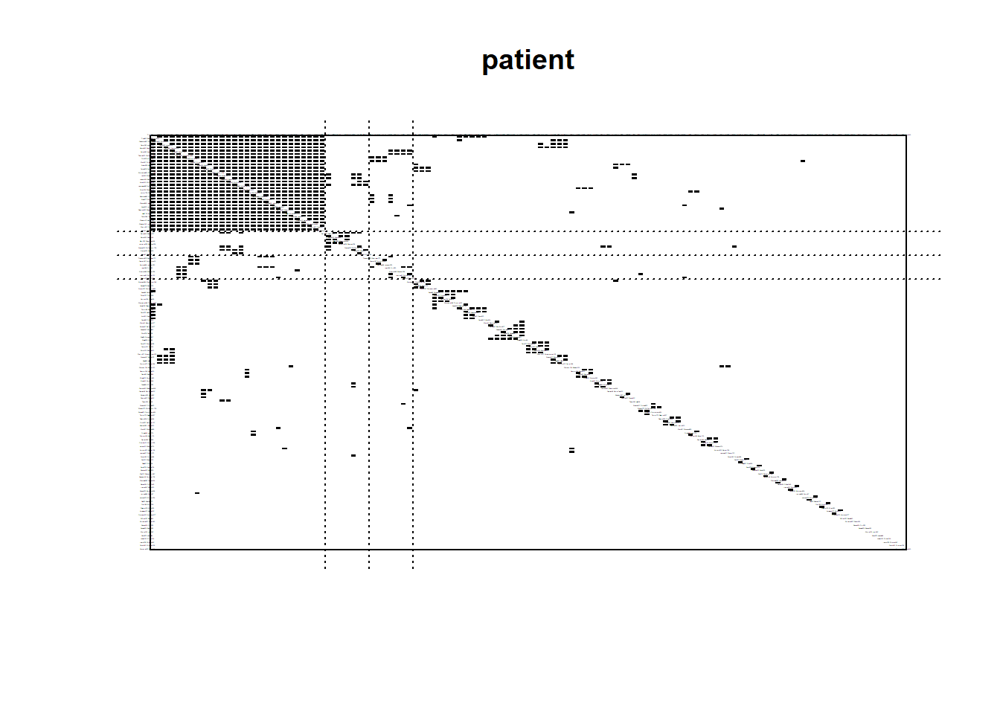
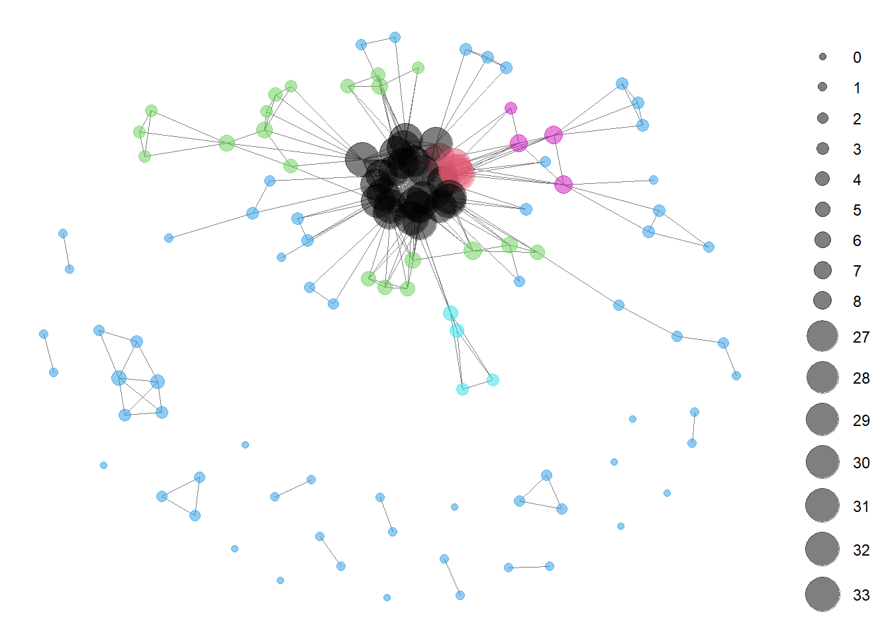
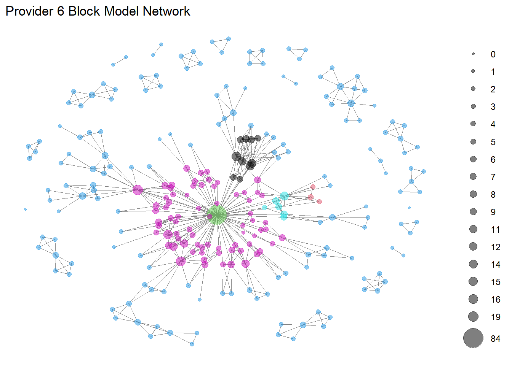
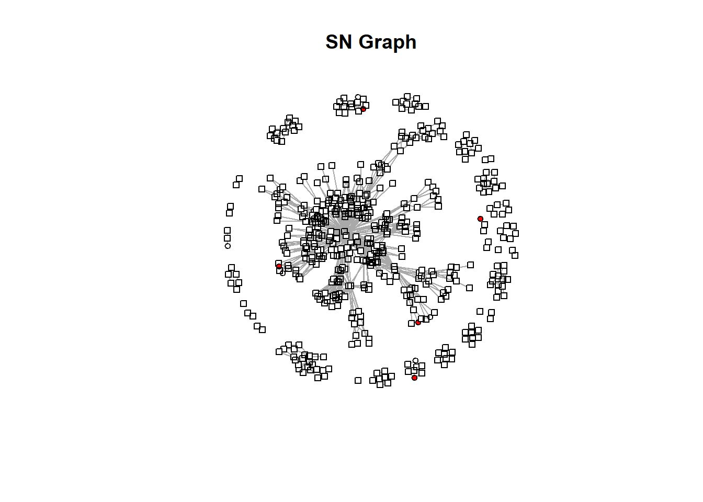
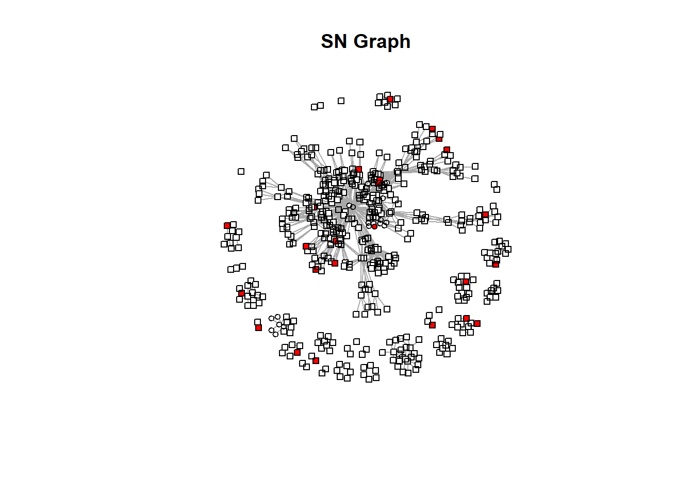
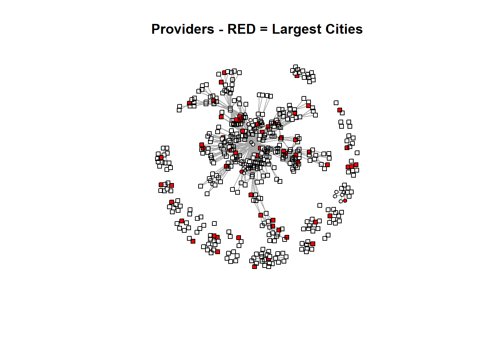

library(tidyverse)
library(readr)
library(igraph)
library(sna)
library(intergraph)
library(ggplot2)This post will explore the Synthetic Mass network data in more detail.
Read in Data
pat_attr <- read_csv("post1_data/pat_attr.csv",
col_types = cols(...1 = col_skip()))
pro_attr <- read_csv("post1_data/pro_attr.csv",
col_types = cols(...1 = col_skip()))
encounters_cleaning <- read_csv("post1_data//encounters_cleaning.csv",
col_types = cols(...1 = col_skip()))
encounters_cleaned <- read_csv("post1_data//encounters_cleaned.csv",
col_types = cols(...1 = col_skip()))
encounter_attributes <- read_csv("post1_data/encounter_attributes.csv",
col_types = cols(...1 = col_skip()))
encounters_el <- read_csv("post1_data/encounters_el.csv",
col_types = cols(...1 = col_skip()))
encounters_st_3 <- read_csv("post1_data/encounters.st.3.csv",
col_types = cols(...1 = col_skip()))
attribute_list <- read.csv("post1_data/attribute_list.csv")
pat_blks6 <- readRDS("pat_blks6_results.rds")
prov_blks6 <- readRDS("prov_blks6_results.rds")Create bipartite network with attributes
encounters.stat <- network(encounters_el,
directed = FALSE,
bipartite = TRUE,
matrix.type = "edgelist",
vertex.attr = attribute_list)#create igraph
encounters.ig <- graph_from_biadjacency_matrix(encounters.stat)encounters.stat2 <- asNetwork(encounters.ig)projected_graph <- bipartite_projection(encounters.ig)PATIENT
patient_matrix <- as.matrix(as_adjacency_matrix(projected_graph$proj1))
patient.stat <- asNetwork(projected_graph$proj1)
patient.se <- equiv.clust(patient_matrix,
equiv.fun = "sedist",
method = "hamming",
mode = "graph",
cluster.method = "complete")pat_blk_model.patient.org <- blockmodel(patient_matrix,
patient.se, k = 4)plot.block<-function(x=pat_blk_mod, main=NULL, cex.lab=.00001,show_labels = FALSE){
plot.sociomatrix(x$blocked.data, labels=list(x$plabels,x$plabels),
main=main, drawlines = FALSE, cex.lab=cex.lab)
for (j in 2:length(x$plabels)) if (x$block.membership[j] !=
x$block.membership[j-1])
abline(v = j- 0.5, h = j- 0.5, lty = 3, xpd=FALSE)
}
plot.block(pat_blk_model.patient.org, main = "patient")
pat_blks6 <- readRDS("pat_blks6_results.rds")# blockmodel with optimized partition
pat_blk_mod <- blockmodel(patient_matrix, pat_blks6$best$best1$clu,
plabels = rownames(patient_matrix))#assign block membership to vertex attribute
patient.stat%v%"role"<-pat_blk_mod$block.membership[match(patient.stat%v%"vertex.names",pat_blk_mod$plabels)]
#plot network using "role" to color nodes
GGally::ggnet2(patient.stat,
node.color="role",
node.size=sna::degree(patient.stat, gmode="graph"),
node.alpha = .5)Registered S3 method overwritten by 'GGally':
method from
+.gg ggplot2
PROVIDER
provider_matrix <- as.matrix(as_adjacency_matrix(projected_graph$proj2))
provider.stat <- asNetwork(projected_graph$proj2)
provider.se <- equiv.clust(provider_matrix,
equiv.fun = "sedist",
method = "hamming",
mode = "graph",
cluster.method = "complete")blk_model.provider.org <- blockmodel(provider_matrix,
provider.se, k = 6)prov_blks6 <- readRDS("prov_blks6_results.rds")# blockmodel with optimized partition
prov_blk_mod <- blockmodel(provider_matrix, prov_blks6$best$best1$clu,
plabels = rownames(provider_matrix))#assign block membership to vertex attribute
provider.stat%v%"role"<-prov_blk_mod$block.membership[match(provider.stat%v%"vertex.names",prov_blk_mod$plabels)]
#plot network using "role" to color nodes
GGally::ggnet2(provider.stat,
node.color="role",
node.size=sna::degree(provider.stat, gmode="graph"),
node.alpha = .5) + ggtitle("Provider 6 Block Model Network")
Create New Attribute Lists
pat_attr$block <- pat_blk_mod$block.membership
pro_attr$block <- prov_blk_mod$block.membership
both_attr <- bind_rows(pat_attr, pro_attr)
pat_attr_list <- do.call(list, pat_attr)
pro_attr_list <- do.call(list, pro_attr)
attribute_list <- do.call(list, both_attr)provider.st <- network(provider_matrix,
directed = FALSE,
matrix.type = "adjacency",
vertex.attr = pro_attr_list)
provider.st Network attributes:
vertices = 253
directed = FALSE
hyper = FALSE
loops = FALSE
multiple = FALSE
bipartite = FALSE
total edges= 554
missing edges= 0
non-missing edges= 554
Vertex attribute names:
block CITY GENDER NAME type vertex.names
No edge attributesprovider_graph <- graph_from_biadjacency_matrix(provider.st)#assign colors
#colors <- c("yellow", "blue", "green", "orange", "red", "purple")
#vertex_colors <- colors[pro_attr_list$block]
vertex_colors <- ifelse(pro_attr_list$CITY == "BOSTON", "red", "white")
vertex_shape <- ifelse(pro_attr_list$CITY == "BOSTON", "circle", "square")plot(provider_graph,
layout = layout.fruchterman.reingold,
vertex.label.dist = 2,
vertex.size = 4,
vertex.color = vertex_colors,
vertex.shape = vertex_shape,
edge.label = NA,
vertex.label = NA,
vertex.label.cex = 0.2,
main = "SN Graph")
What other cities are on the provider list. Boston is not being properly represented, I have a feeling
table(pro_attr$CITY)
ALLSTON AMHERST ANDOVER ARLINGTON
1 2 1 3
AUBURN AUBURNDALE BELLINGHAM BEVERLY
1 2 1 2
Boston BOSTON BRIDGEWATER BRIGHTON
1 5 2 2
BROCKTON BROOKLINE CAMBRIDGE CHARLESTOWN
1 2 4 1
CHARLTON CHATHAM CHELMSFORD CHELSEA
1 1 1 2
CHICOPEE DARTMOUTH DEDHAM DORCHESTER
2 1 5 2
E FALMOUTH Fairhaven FAIRHAVEN FALL RIVER
1 1 3 4
FALMOUTH Fitchburg FOXBOROUGH FRAMINGHAM
3 1 1 2
GEORGETOWN GROTON HANOVER HARWICH PORT
1 1 2 1
HAVERHILL HINGHAM HOLLISTON HOLYOKE
3 2 1 2
HOPKINTON HYANNIS HYDE PARK Jamaica Plain
2 2 1 1
JAMAICA PLAIN LAWRENCE LEOMINSTER LEXINGTON
2 3 2 3
LOWELL LUDLOW Lynn LYNN
3 1 1 1
MALDEN MARLBOROUGH MATTAPAN MEDFORD
1 5 2 2
MELROSE METHUEN MIDDLEBORO MILFORD
2 2 1 3
MILTON NATICK NEEDHAM NEW BEDFORD
3 3 2 3
NEWBURYPORT NEWTON NORTH ADAMS NORTH ANDOVER
1 5 1 1
NORTH DARTMOUTH NORTHAMPTON NORTHBOROUGH NORWELL
1 1 1 3
NORWOOD OAK BLUFFS PEABODY PEMBROKE
6 1 2 1
PITTSFIELD PLYMOUTH QUINCY RANDOLPH
3 6 3 2
RAYNHAM READING ROCHDALE ROSLINDALE
2 1 1 4
ROWLEY ROXBURY S YARMOUTH SALEM
1 1 1 2
SCITUATE SHARON SHREWSBURY SOMERVILLE
3 1 1 3
SOUTH YARMOUTH SOUTHBOROUGH SPRINGFIELD STONEHAM
2 1 2 2
STOUGHTON TEWKSBURY UPTON UXBRIDGE
2 2 1 1
WALPOLE WALTHAM WAREHAM WELLESLEY
2 7 3 1
WEST BRIDGEWATER West Roxbury WEST ROXBURY WESTBOROUGH
3 1 1 4
WESTFORD WESTWOOD WEYMOUTH WILBRAHAM
3 1 2 1
WILLIAMSTOWN WINTHROP WOBURN Worcester
1 1 6 1
WORCESTER
17 pro_attr <- pro_attr %>%
mutate(
CITY =tolower(CITY)
)
pro_attr_list <- do.call(list, pro_attr)Should have cleaned that earlier, but here we go!
Boston_Neighborhoods <- c(
"ALLSTON",
"BRIGHTON",
"BOSTON",
"CHARLESTOWN",
"DORCHESTER",
"HYDE PARK",
"JAMAICA PLAIN",
"MATTAPAN",
"ROSLINDALE",
"ROXBURY",
"West Roxbury",
"WEST ROXBURY"
)
Boston_Neighborhoods <- tolower(Boston_Neighborhoods)#assign colors
#colors <- c("yellow", "blue", "green", "orange", "red", "purple")
#vertex_colors <- colors[pro_attr_list$block]
vertex_colors <- ifelse(pro_attr_list$CITY %in% Boston_Neighborhoods, "red", "white")
vertex_shape <- ifelse(pro_attr_list$block == "1", "circle", "square")
#vertex_shape <- ifelse(pro_attr_list$CITY == "BOSTON", "circle", "square")plot(provider_graph,
layout = layout.fruchterman.reingold,
vertex.label.dist = 2,
vertex.size = 4,
vertex.color = vertex_colors,
vertex.shape = vertex_shape,
edge.label = NA,
vertex.label = NA,
vertex.label.cex = 0.2,
main = "Providers - RED = BOSTON")
So… it’s not Boston related.
How about Highest populations
largest_pop <- c(
"Boston",
"Worcester",
"Springfield",
"Cambridge",
"Lowell",
"Brockton",
"Quincy",
"Lynn",
"New Bedford",
"Fall River",
"Lawrence",
"Newton",
"Somerville",
"Framingham",
"Haverhill")
largest_pop <- tolower(largest_pop)#assign colors
#colors <- c("yellow", "blue", "green", "orange", "red", "purple")
#vertex_colors <- colors[pro_attr_list$block]
vertex_colors <- ifelse(pro_attr_list$CITY %in% largest_pop, "red", "white")
vertex_shape <- ifelse(pro_attr_list$block == "1", "circle", "square")
#vertex_shape <- ifelse(pro_attr_list$CITY == "BOSTON", "circle", "square")plot(provider_graph,
layout = layout.fruchterman.reingold,
vertex.label.dist = 2,
vertex.size = 4,
vertex.color = vertex_colors,
vertex.shape = vertex_shape,
edge.label = NA,
vertex.label = NA,
vertex.label.cex = 0.2,
main = "Providers - RED = Largest Cities")
block1 <- pro_attr %>%
filter(block == 1)Ted955 <- encounters_cleaned %>%
filter(PROVIDER == "Ted955 Reilly981") %>%
group_by(PROVIDER, CITY.x, REASONDESCRIPTION)%>%
summarize(COUNT = n()) `summarise()` has grouped output by 'PROVIDER', 'CITY.x'. You can override
using the `.groups` argument.Ted955# A tibble: 11 × 4
# Groups: PROVIDER, CITY.x [1]
PROVIDER CITY.x REASONDESCRIPTION COUNT
<chr> <chr> <chr> <int>
1 Ted955 Reilly981 Fitchburg Abnormal findings diagnostic imaging heart+… 11
2 Ted955 Reilly981 Fitchburg Acute ST segment elevation myocardial infar… 1
3 Ted955 Reilly981 Fitchburg Acute non-ST segment elevation myocardial i… 2
4 Ted955 Reilly981 Fitchburg Aortic valve regurgitation (disorder) 4
5 Ted955 Reilly981 Fitchburg Aortic valve stenosis (disorder) 6
6 Ted955 Reilly981 Fitchburg Chronic congestive heart failure (disorder) 86
7 Ted955 Reilly981 Fitchburg History of coronary artery bypass grafting … 6
8 Ted955 Reilly981 Fitchburg Ischemic heart disease (disorder) 30
9 Ted955 Reilly981 Fitchburg Mitral valve regurgitation (disorder) 2
10 Ted955 Reilly981 Fitchburg Myocardial infarction (disorder) 3
11 Ted955 Reilly981 Fitchburg Stroke 1Gonna go ahead and say Ted’s a Cardiologist